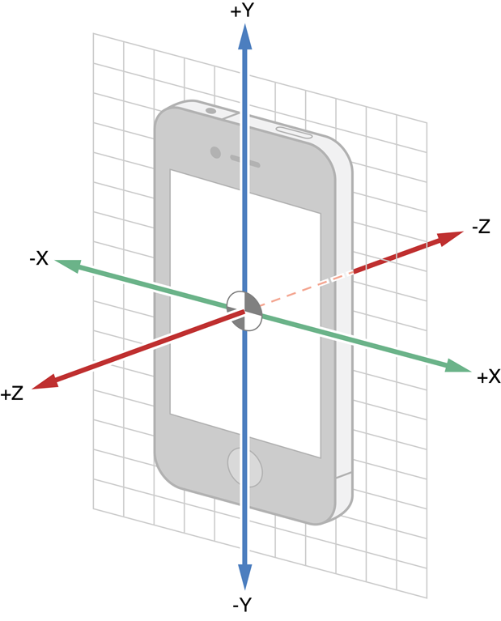

released in 2007 (with the first generation iPhone)
Multi-touch interface (almost button-less)
Gesture recognition (swipe, pinch, etc.)
Somewhat based on Mac OSX
Core Foundation and Foundation frameworks
Cocoa touch instead of Cocoa
Darwin (Unix-like system)
Version History
2007 - iPhone OS 1
2008 - iPhone OS 2 (iPhone SDK, App Store, 3rd party apps)
2009 - iPhone OS 3 (iPad)
2010 - iOS 4 (limited multitasking)
2011 - iOS 5 (iCloud)
2012 - iOS 6
2013 - iOS 7 (extended multitasking)
2014 - iOS 8 (Swift, Metal)
2015 - iOS 9 (split view)
2016 - iOS 10 (Siri, 3D touch)
2017 - iOS 11 (ARKit, Files, more multitasking)
Fragmentation
iOS runs on a limited number of devices (similar architecture, similar iterface)
Most devices run the latest version of iOS
OS, hardware and SDK are developped by the same company
Devices have varying screen size and resolution
Some features are not available to all devices (multitasking, Siri, camera, etc.)
Two main device families :
iPhone
iPad
Distribution
The only officially accepted way to add apps to an iOS terminal is to use Apple's App Store
Apple has total control over which apps are accepted on the store
delay between submission and availability
Apple guidelines are strict and sometimes difficult to match
guarantees a minimal quality of apps
developper license (99$ / year) necessary to submit an app
free developper account sufficient to develop and install apps on personal devices
developpers receive 70% of the price of the sold app
About this Lecture
iOS development is a vast topic
many elements cannot be addressed in this lecture (including important ones)
even with more time, one never fully knows all about iOS programming
hundreds of existing classes
thousands of methods and attributes
best way to learn is to look for examples, ask questions and read the documentation
the API, SDK and language evolve quickly
examples and discussions on the Internet are already outdated
this lecture is also already outdated
most elements are interconnected
no natural order to present things
examples require to use some elements before explaining them
Mobile Development
Generalities
Developping for an embedded system
cross-compiling
stronger contraints
memory
energy
CPU
Conception based on user interface
Model-View-Controller architecture
Reactive programming
Event-based programming
Mobile Terminals
Miniature computer
Embedded system
limited resources
Reactive system
based on user interface
Smartphone vs.Tablet
screen size is different
phone calls
most of the rest is identical
Architecture
Processor
ARM (designed by Apple)
Storage
Flash memory
Other hardware
Network
Accelerometer, gyroscope
GPS location
Camera
etc.
iOS vs. Android
Developper
Apple
Programming language
Swift and/or Objective C
some C and C++
Development environment
XCode
Development kit
iOS SDK
Developper
Google
Programming language
Java
some C++
(Kotlin, possibly Swift in the future)
Development environment
Eclipse
Development kit
Android SDK
Cross-Compilation
Constraints
Limited resources
Memory
Beware of memory leaks
Java (Android): garbage collector
Swift / Objective C (iOS): Automatic Reference Counting (ARC)
Energy
Some activities are very demanding (GPS, camera, etc.)
Avoid inefficient algorithms (CPU drains battery)
Handle urgent events
Low memory alert
Low battery alert
Phone call interruption
Other Constraints
User interface
Simple and convenient to use
Should be reactive
Should fit with the OS and other apps ("look and feel")
Fiability
Avoid errors and crashing (no error handling when app crashes)
Security
Device holds sensitive personal data
Apps each have their own files directory and run in a sandbox (iOS only)
Speed
App should work on slower devices, with other apps using resources
First Example
→ Writing the first app in XCode : Greeting
Workflow
Mobile development is built around the user interface (screen):
Design Graphical User Interface (GUI)
Define and handle events
Events
Interruption
stops execution and jumps to a specific address
low level
hardware exceptions
Examples :
division by zero
reset button
process interruption
Event
stops execution and runs a procedure
higher level
handled by OS interface
Examples :
click a button
move the cursor
thread finishes a computation
Call-back
Events are handled by "call-backs"
Enable an event
associate a routing procedure to an existing event
Disable an event
remove association with procedure (event will not trigger the procedure if it happens)
Wait for an event
If an event is not enabled (or disabled), the OS will consider that there is nothing to be done.
The running program will not be notified of unhandled events occurring.
Example
→ Programmatical version of Greeting
A Short Introduction to Swift
Swift
iOS applications should be programmed using objective C or Swift (since iOS 8)
Swift is highly recommended (simpler, faster and better supported from now on)
Modern syntax inspired by modern languages
Heavily object-oriented
Developed by Apple and published in 2014
Lighter and more elegant syntax
Better performance with LLVM compiler
Can be tested with playgrounds or read-eval-print loop (REPL)
General Syntax
let a = 10
var b: Int = 12
b += a
let primes = [2, 3, 5, 7, 11, 13]
func isPrime(n: Int) -> Bool {
for x in 2 ..< n {
if n % x == 0 {
return false
}
}
return true
}
var x: Int
x = 12
if isPrime(x) {
println("\(x) is prime.")
} else {
println("\(x) is not prime.")
}
Variables are declared with let (immutable) or var (mutable)
Variables are typed but type can be inferred by the compiler
Functions are declared with func, arguments and return values are typed
Optionals
var a: Int? = 12
var b = 10
b += a // error, a could be nil
if a != nil {
b += a! // a is unwrapped
}
a = nil
b = nil // error
if let aValue = a {
// conditional unwrapping
b += aValue
}
Swift introduces “optional” versions of all types
An optional type T? represents a value that can be either nil or a value of type T
Always make sure an optional is not nil before using its value
Optionals can be unwrapped to work with the non nil value
Object Programming
In a “classical” program
program has variables
program calls functions that affect variables
In object-oriented programming
variables contain objects
objects contain their own “sub-variables” called properties
objects carry their own functions called methods
possible to access and modify the properies of each object
possible to call a specific object method (each objects does its own work)
Classes and Instances
class Person {
var name: String // a property
var age: Int
init(name: String, age: Int) {
self.name = name
self.age = age
}
func greet() { // a method
print("Hello, \(name)!")
}
func increaseAge(years: Int) {
age += years
}
func ageDifferenceWith(other: Person) -> Int {
return age - other.age
}
}
A class is a general description of how objects should be and behave
Classes have properties and methods
An instance is a specific object, that matches the description of the class
Different instances of the same class can have different values of their properties
Inheritance
class Student: Person {
var school: String?
var year: Int?
init(name: String, age: Int, school: String, year: Int){
self.school = school
self.year = year
super.init(name: name, age: age)
}
override init(name: String, age: Int) {
super.init(name: name, age: age)
}
override func greet() {
print("Hi, student \(name)")
}
func classDifferenceWith(other: Student) -> Int? {
if let year = year, oYear = other.year {
return year - oYear
}
return nil
}
}
Classes can be defined as a refinement of an existing one
the existing class is the parent of the new class (child)
inherits properties and methods from its parent
Methods can be redefined in the child (override)
Creating Objects
To create an object
allocate the necessary memory
initialize the object according to the specifications of the class
These steps are performed by the init function
Objects are removed from memory automatically when nothing points to them (see later section)
Intializers
Classes can have more than one initializer
Some are designated initializers, others are convenience initializers
Designated initializers must call a designated initializer from the parent class
Convenience initializers must call another initializer from the same class (and ultimately a designated initializer)
Illustration
Back to the Greeting app.
Deinit
class Player {
var coinsInPurse: Int
init(coins: Int) {
coins = Bank.give(coins)
}
func winCoins(coins: Int) {
coins += Bank.give(coins)
}
deinit {
Bank.get(coins)
}
}
When an object is removed from memory, its deinit function is called
This function should be used to clean up the objects or data owned by the removed object
deinit is called automatically, and should never be called manually
Graphical User Interface
Model View Controller
Design pattern, for structuring an application in 3 parts
model : data of the application
view : user interface, representation of data from the model
controller : management logic (program)
Model View Controller
Communication protocol between separate parts
Internal implementation of parts is independent
Better structure, easier to maintain
Model
class Player {
var cards: [Card]
var game: Game
var points: Int
var isTurnPlayer: Bool
init(...) {
...
}
func playCard(card: Card) {
...
}
func endTurn() {
...
}
func draw(numberOfCards: Int) {
...
}
...
}
In iOS, the model is represented by the data object classes
the model can be stored in the terminal memory in different forms (Core Data, archiving, NSUserDefaults)
organization of the data structures with classes and attributes
View
Cocoa Touch (iOS UI Framework) defines a class UIView
all views should inherit from UIView
many subclasses are already defined
developers can subclass any existing class to add specific behavior
Note : the elements added to the Storyboard are subclasses of UIView
UIView
To create a user interface
create a view hierarchy
associate specific code (in the controller) to the possible events that the view elements can react to
using the existing subclasses ensures a uniform experience for the users across apps
What is a view ?
A rectangle
in which it is possible to draw
that reacts to events
contained in a window (UIWindow)
View hierarchy
each view is placed in a superview
a view can have any number of subviews
lower level views are drawn on top of higher level
subviews of a same view are drawn one after the other
// create a navigation controller and its
// root controller
let vc = ViewController()
let nc = UINavigationController(rootViewController: vc)
window.rootViewController = nc
// create a new controller an push it on top
let vc2 = ViewController()
navigationController?.pushViewController(vc2, animated: true)
// pop the top controller (thus recovering
// the previous one)
navigationController?.
popViewControllerAnimated(true)
Example : Navigation Controller
There are many ways to switch from a view controller to another one (and change the displayed view)
changing the root controller of the application window (should be avoided)
presenting a new controller
using a navigation controller
Controller transitions can be defined in the Interface Builder (storyboards)
Responding to Events
Touch and Motion
There are 4 kinds of basic events to interact with the UI :
touch events
single or multiple touches on the screen tap, double-tap, move, etc.
motion events (iOS 3)
detected by the accelerometer and gyroscope
shake, rotation, acceleration...
Remote control events (iOS 4)
Presses events (iOS 9)
The class of objects that are prepared to handle such events is UIResponder
Subclasses include UIApplication, UIWindow, UIView and UIViewController
The Responder Chain
When an event is detected it is sent to a specific responder
for a touch, the view where it happened
for another event, the first responder
The event goes through the responder chain until a responder handles it
from a view to its super view
from a top view to its controller
from a controller to the super view of its view
from the main controller to the window, and the application
Hit Test
Returns where a touch occurred
recursive calls to hitTest:withEvent:
if the touch is in a view, all its sub views are tested
if a touch is out of the bounds of a given view, its subviews are not tested
return the lowest view in the hierarchy that contains the point of touch
Only the point where the touch started counts
UIEvent
var timestamp: NSTimeInterval
var type: UIEventType
var subtype: UIEventSubtype
func allTouches() -> Set?
func touchesForView(_ view: UIView) -> Set?
func touchesForWindow(_ window: UIWindow) -> Set?
UIEvent is the class of objects created when an event occurs
an UIEvent object has a sub-type (none, motion or possible remote control events)
touch events contains a set of UITouch objects
all events have a time stamps that corresponds to the time when the event was created
UIEventSubtype
enum UIEventSubtype : Int {
case None
case MotionShake
case RemoteControlPlay
case RemoteControlPause
case RemoteControlStop
case RemoteControlTogglePlayPause
case RemoteControlNextTrack
case RemoteControlPreviousTrack
case RemoteControlBeginSeekingBackward
case RemoteControlEndSeekingBackward
case RemoteControlBeginSeekingForward
case RemoteControlEndSeekingForward
}
Shake
UIKit detects 3 events associated with a shake
motionBegan(_:with:) when a shake motion begins
motionEnded(_: ith:) when a shake motion ends
motionCancelled(_:with:) when a shake motion is cancelled by another event (app becomes inactive, view disappears, etc.)
clean state after motionBegan
The motion for a shake is UIEventSubtypeMotionShake
Touch
There are 4 methods to handle touch events
touchesBegan(_:with:)
touchesMoved(_:with:)
touchesEnded(_:with:)
touchesCancelled(_:with:)
The first parameter of each method contains the set of UITouch objects that are relevant to the method (began, moved, ended or cancelled)
Example
Touch events in Bezier
Gesture Recognizers
Some specific gestures can be recognized automatically :
single / multiple tap
pinch / zoom
rotate
swipe
pan
screen-edge pan
long press
The class UIGestureRecognizer (and its subclasses) handle such events
User interaction calls functions from the UITableViewDataSource protocol
Controller must make changes to data
Delegate
The table view delegate helps manage other features of the table view
configure rows and sections
handle selections of cells
editing mode
manage headers and footers
help reorganizing cells
etc.
Example : TableViews
Memory Management
ARC
Swift uses Automatic Reference Counting (ARC) to manage objects in memory
associate a counter to each object in memory
count how many properties, constants and variables refer to the object
whenever counter reaches 0, the object is removed from memory
reference counting only applies to instances of classes (reference types)
Most of the time, ARC works fine automatically
Reference Cycle
class Person {
var apartment: Apartment?
...
}
class Apartment {
var tenant: Person?
...
}
var john = Person()
var apt = Apartment()
john.apartment = apt
apt.tenant = john
john = nil
apt = nil
// neither object is deinitialized
Problem : sometimes two (or more) objects refer to each other and are not removed from memory
Reference Cycle
john = Person(...)
apt = Apartment(...)
john = Person(...)
apt = Apartment(...)
john.apartment = apt
apt.tenant = john
john = Person(...)
apt = Apartment(...)
john.apartment = apt
apt.tenant = john
john = nil
apt = nil
Strong, Weak and Unowned
class A {
var x: Int // strong
weak var y: Int? // weak
unowned var z: Int // unowned
...
}
To break reference cycles, we use weak or unowned references
weak references for optional types
reference counter is not incremented
if referenced object is deinitialized, it is replaced by nil
unowned references for other types
does not increment counter
should always have a value
causes error if accessed after deinitialization
Breaking the Cycle
john = Person(...) class Apartment {
apt = Apartment(...) weak var tenant: Person?
john.apartment = apt ...
apt.tenant = john }
john = Person(...) class Apartment {
apt = Apartment(...) weak var tenant: Person?
john.apartment = apt ...
apt.tenant = john }
apt = nil
john = Person(...) class Apartment {
apt = Apartment(...) weak var tenant: Person?
john.apartment = apt ...
apt.tenant = john }
apt = nil
john = nil
Illustration
Automatic Reference Counting in a Playground
Other Interesting Things
Device Motion

The iDevices contain motion detectors that can measure
acceleration
rotation
magnetic fields
altitude
CoreMotion framework
Main class is CMMotionManager
Device Motion
To react to motion
instantiate a CMMotionManager object
configure the motion manager
(optional) define a handler for measure updates
start updates for the desired measure
stop updates when not needed
CoreMotion is independent from UIKit
No events, no responder chain
Everything goes through the motion manager
data can be
pulled : app queries the manager when needed
pushed : manager sends updates automatically to the handler
Cannot be tested on simulator
Geolocation
iOS devices can track geographic location
using GPS technology, Wi-Fi or cellular networks
compute current latitude and longitude of device
can obtain orientation (compass) for devices with magnetometer
interface with MapKit for displaying geographic information
CoreLocation framework
use CLLocationManager class
Geolocation
Similar to motion events
instantiate CLLocationManager
configure manager
set delegate
start recording location
set handler for location update
stop recording when not needed
See CLLocationManagerDelegate protocol for possible interaction with the manager
Using location services requires user authorization
ask for authorization on first use
two levels of authorization : foreground only or foreground and background
Possible to define regions and react to user entering/leaving these regions
Significant location change service saves battery by sending updates only when location changes significantly
Notification Center
Idea : broadcast information between elements across your app
Works as a bulletin board
Any function can post notifications to notification center
Any object can observe for a specific notification
When notification is sent, all observers are notified and execute a call-back
Part of the Foundation framework
Use NotificationCenter class and related elements
Notification Center
Default notification center : NotificationCenter.default
Many notifications already defined by API
Notification has
name (Notification.Name)
sending object (AnyObject)
optional dictionary for more data
Observers can register for notifications by name and/or sender
Notification call-backs can be run on separate thread
Notification Center (Example)
// declare a new notification name
extension Notification.Name {
static let specialEvent = Notification.Name("Special Event")
}
// post a new notification
NotificationCenter.default.post(
name: .specialEvent,
object: self,
userInfo: nil)
// register to a given notification
NotificationCenter.default.addObserver(
self,
selector: #selector(specialAction(notification:)),
name: .specialEvent,
object: nil)
// setup a handler
func specialAction(notification: NSNotification) {
println("A special event occurred!")
}
Grand Central Dispatch
Sometimes, some tasks should be executed asynchronously (in parallel)
long computations that shouldn't slow down UI
wait for a special event (ex: semaphore)
run tasks in parallel
Tasks are organized in queues
Different queues can have different priorities and properties
Implements threads
Part of the Foundation framework
The whole set of functions is denoted as Grand Central Dispatch (GCD)
Grand Central Dispatch
To dispatch an asynchronous task
get or create queue
call async on the queue with code to be executed
Queues can be
serial : tasks are run one after the other
concurrent : tasks execute in parallel
Some queues are already defined
main queue (serial) : created when app starts. Only queue that should modify the UI
global (concurrent) queues :
userInteractive
userInitiated
default
utility
background
unspecified
Grand Central Dispatch (Example)
// create a queue
let queue = DispatchQueue(label: "uniqueID")
let queue = DispatchQueue(label: "uniqueID", qos: .userInitiated)
// use existing
let bgQueue = DispatchQueue.global(qos: .global)
let mainQueue = DispatchQueue.main
// dispatch to queue
queue.async {
// some code
}
// background task with UI action
bgQueue.async {
// do some complicated task in the background
DispatchQueue.main.async {
// do a simple task on the UI when the previous task
// finishes
}
}
Persisting Data
There are many options available to store persistent data on an iDevice
UserDefaults : simplest solution, stores simple information
NSCoding : intermediate solution, stores complex objects to file
CoreData : most complete solution, stores objects to a database
other solutions : saving on iCloud or online server
UserDefaults
To read or write values :
get a reference to the shared instance UserDefaults.standard
get or set values for a given key
Associate values to keys (Strings)
Usually used for storing default values or user preferences
Can store
Data
String
Number
Date
Array
Dictionary
Very simple to use, but limited
NSUserDefaults (Example)
// get a reference to the UserDefaults
let defaults = UserDefaults.standard
// set the value for key "userNameKey"
defaults.set("Guybrush Threepwood", forKey: "userNameKey")
// get the value for key "userNameKey"
let name = defaults.string(forKey: "userNameKey")
println(name!)
CoreData vs. NSCoding
CoreData
NSCoding
Entity Modeling
Yes
No
Querying
Yes
No
Speed
Fast
Slow
Serialization Format
SQLite, XML, or NSData
NSData
Migrations
Automatic
Manual
Undo Manager
Automatic
Manual
CoreData
NSCoding
Persists State
Yes
Yes
Pain in the Ass
Yes
No
NSCoding
The NSCoding protocol requires two methods
encode(with coder: NSCoder) describes how to convert the object into an NSData object (byte sequence)
init(coder decoder: NSCoder) describes how to create the object from an NSData object
Classes NSKeyedArchiver and NSKeyedUnarchiver perform the conversions
works if all archived properties also conform to NSCoding
NSCoding
// define a class and describe how to archive/unarchive it
class Person: NSObject, NSCoding {
let name: String
let age: Int
init(name: String, age: Int) {
self.name = name
self.age = age
}
required init?(coder decoder: NSCoder) {
self.name = decoder.decodeObject(forKey: "name") as! String
self.age = decoder.decodeInteger(forKey: "age")
}
func encode(with coder: NSCoder) {
coder.encode(name, forKey: "name")
coder.encode(age, forKey: "age")
}
}
var people = [Person]()
people.append(Person(name: "Sherlock Holmes", age: 25))
people.append(Person(name: "Mycroft Holmes", age: 32))
// encode objects and save data
let encodedData = NSKeyedArchiver.archivedData(withRootObject: people)
UserDefaults.standard.set(encodedData, forKey: "people")
// retrieve data and decode into objects
let data = UserDefaults.standard.data(forKey: "people")!
let myPeopleList = NSKeyedUnarchiver.unarchiveObject(with: data) as! [Person]
NSCoding Example
Saving the cards list in the TableViews app.
2D Graphics
There are two main options for managing and animating 2D objects
CoreAnimation framework
basic animation on most view properties (position, size, color, etc.)
drawing methods on view using layers
SpriteKit framework
sprite and image management
animations and sequences of actions (combines transformations and events on view elements)
2D physics engine available (collision detection, gravity, inertia, etc.)
You could also redo everything by hand on UIView by redefining drawRect...
3D Graphics
Possible options for 3D graphics and animations :
SceneKit : 3D equivalent to SpriteKit, with scenes, objects, animations and physics engine
OpenGL ES : platform-neutral API implemented for iOS
Metal : Apple specific low-level 3D instructions set